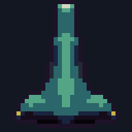
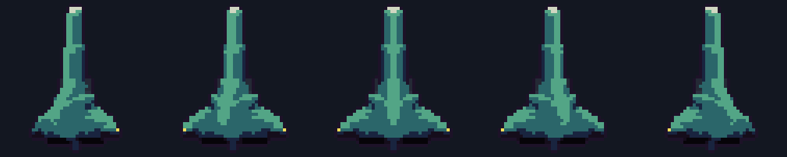

The automaton runs on a fixed logical grid and the result is resampled, so a seed keeps its identity at every output size.

The shading pass already yields a height field, so the hull is rotated about its long axis with a depth buffer: the near wing covers the far one.
